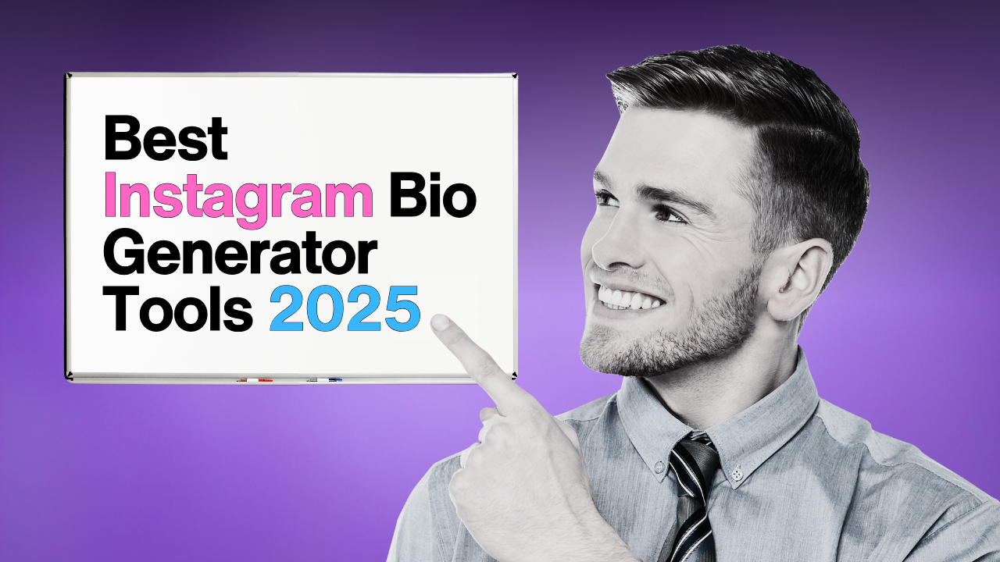

Best Free Instagram Bio Generator Tools (2025 Guide)
Your Instagram bio is often the first thing people notice when they land on your profile. In 2025, competition on Instagram is tougher than ever, which means having a creative, unique, and professional bio is essential for making a strong impression. The good news is, you don’t need to spend hours thinking of the perfect line — you can use a free Instagram bio generator tool to do the work for you.
Why Use an Instagram Bio Generator?
Writing a bio might sound easy, but when you have just 150 characters, every word counts. A bio generator helps you come up with creative and personalized Instagram bios that match your niche, whether you’re an influencer, small business owner, or just someone who wants to stand out. These tools save time, spark ideas, and keep your profile looking professional.
Best Free Instagram Bio Generator Tools (2025)
Here are some of the top bio generator tools that are free to use in 2025:
- FreeInstaTools Bio Generator – Create catchy and stylish Instagram bios instantly with our tool. Perfect for influencers, businesses, and personal accounts.
- Lingojam Fancy Text Generator – Convert simple bios into stylish fonts and creative text designs.
- InstaBio AI Tools – AI-powered bio suggestions based on your interests and personality.
- CaptionPlus – While mainly for captions, it also provides short and unique bio ideas.
Tips for Writing a Perfect Instagram Bio in 2025
Even if you use a generator, keep these tips in mind to maximize your bio’s impact:
- Be Clear: Tell people who you are and what you do.
- Add Keywords: Include keywords related to your niche (e.g., travel, fitness, fashion).
- Use Emojis: They make your bio eye-catching and fun.
- Include a Call-to-Action: For example, “Check out my blog” or “DM for collaborations.”
- Update Regularly: Refresh your bio every few months to keep it relevant.
Final Thoughts
In 2025, having a strong Instagram bio is more important than ever. Whether you’re an influencer looking to grow your following or a brand wanting to connect with customers, the right bio can set the tone for your entire profile. Using a free Instagram bio generator tool makes the process simple and effective. Try our Instagram Bio Generator today and create a profile that truly stands out!